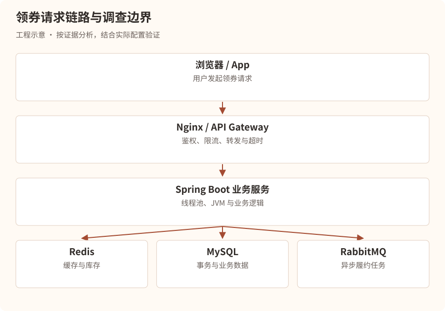
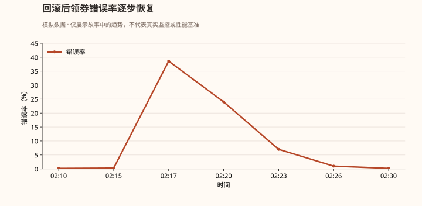

第一幕：一条来自生产环境的警报
凌晨 2:17。
星海科技总部，二十三楼。
整个研发中心已经空无一人，只有服务器机房的散热风扇还在持续轰鸣。
突然，一条告警打破了寂静。
事故快照 · 虚构场景
| 项目 | 观测值 |
|---|---|
| 等级与时间 | P1 · 2026-10-16 02:17:34 |
| 服务 | benefit-service-prod |
| 错误率 | 38.6% |
| P99 延迟 | 12.8s |
| CPU | 96% |
| 异常 | HTTP 500 / 504 激增，实例健康检查失败 |
值班工程师林川被手机震醒。
他刚入职三个月，主要负责公司基于 Spring Boot、MySQL、Redis 和 RabbitMQ 构建的营销权益发放系统。
手机再次震动。
技术负责人陈默发来消息：
“林川，生产出问题了。用户领不了优惠券，你先看一下。”
林川迅速打开电脑。
监控显示，原本稳定在每秒 800 次请求的系统，突然出现了大量超时。
他第一反应是：
“是不是服务器 CPU 太高了？要不要重启？”
陈默立即回复：
“你连 CPU 为什么高都不知道，就准备重启？”
“可是系统已经快不能用了。”
“那你告诉我，重启能解决什么问题？”
林川沉默了。
陈默继续说道：
“记住，线上事故最危险的不是系统宕机，而是工程师在不知道原因的时候，随意操作生产环境。”
“现在，我教你第一件事。”
“先判断故障范围，再止血，保留证据，最后定位根因。不要把排查顺序搞反。”
第二幕：第一条线索——到底是谁出了问题？
陈默打开监控平台。
“林川，假设用户反馈领券失败，你会怀疑哪里？”
林川思考片刻：
“可能是前端，也可能是网关、Java 服务、Redis、MySQL，甚至 RabbitMQ。”
“没错。那你怎么判断？”
陈默在白板上画出整条请求链路。

“现在假设 Nginx 记录大量 504，你能确定 Java 服务 CPU 有问题吗？”
“不能。504 只能说明网关在规定时间内没有等到上游的有效响应。”
“对。它可能是 Java 服务处理太慢，也可能是网络异常、连接建立失败、依赖阻塞等。”
陈默补充：
“还有一点，HTTP 500 和 504 不一定来自同一个故障点。 你必须结合网关日志、应用日志和链路追踪分析。”
第一轮排查：判断影响范围
陈默要求林川先回答四个问题：
- 是所有用户失败，还是部分用户失败？
- 是所有接口失败，还是只有领券接口失败？
- 是所有实例异常，还是某一个实例异常？
- 是突然发生，还是随着流量增加逐渐恶化？
林川查看监控，发现：
- 登录、查询商品等接口基本正常。
- 领券接口错误率大幅上升。
- 三个业务实例中有两个 CPU 接近 100%。
- 故障发生前五分钟，领券服务刚刚发布过新版本。
林川眼睛一亮。
“难道是新版本有 Bug？”
陈默摇头。
“新版本是重要线索，但时间相关不等于因果关系。先看发布前后差异。”
他们核对了发布记录，发现新版本引入了一个营销资格计算逻辑。
但此时系统还在不断报错。
“先止血。”陈默说。
他们确认旧版本兼容当前数据库结构、没有不可逆数据迁移后，通过发布平台将流量切回上一稳定版本，并逐步摘除异常实例。
几分钟后，错误率开始下降。

“系统恢复了。”林川长出一口气。
“但事故还没结束。”陈默说，“我们还不知道为什么。”
第三幕：CPU 100%，就一定是死循环吗？
陈默拿出刚才保留的 JVM 线程快照。
“假设我们在故障发生时登录到 Linux 服务器，你第一步会执行什么？”
林川回答：
top
屏幕显示：
PID USER %CPU %MEM COMMAND
18432 app 195.3 18.2 java
林川愣住了。
“CPU 不是最高 100% 吗？怎么会有 195%？”
陈默笑了笑。
“在 Linux 常见的 top 显示模式下，进程 CPU 使用率可以超过 100%，因为一个进程可能同时使用多个 CPU 核心。”
“195% 大致相当于使用了接近两个逻辑 CPU 核心的计算能力。”
“但注意，这还不能说明一定是 Java 业务代码的问题。”
“可能是频繁 GC、死循环、热点计算、序列化开销，也可能是其他原因。”
“所以，我们需要继续往下查。”
第一步：找到 Java 进程
jps -l
假设输出：
18432 com.xinghai.BenefitApplication
第二步：查看进程内的高 CPU 线程
top -H -p 18432
林川看到：
PID %CPU COMMAND
18479 98.7 java
18483 91.2 java
18491 2.1 java
“18479 和 18483 这两个线程很可疑！”
“对。但现在我们只知道线程 ID，不知道它们执行了什么 Java 代码。”
“怎么办？”
“把线程 ID 转换成十六进制。”
printf '%x\n' 18479
输出：
482f
“为什么要转十六进制？”
“因为 HotSpot JVM 的线程 dump 通常使用十六进制 nid 表示操作系统原生线程 ID。”
第三步：抓取线程栈
jcmd 18432 Thread.print -l > /tmp/thread.txt
然后搜索：
grep -A 35 'nid=0x482f' /tmp/thread.txt
屏幕上出现：
"coupon-worker-7" #85
java.lang.Thread.State: RUNNABLE
at com.xinghai.rule.RuleEngine.calculate(...)
at com.xinghai.coupon.CouponService.check(...)
at com.xinghai.coupon.CouponController.receive(...)
林川兴奋地说道：
“找到凶手了！RuleEngine！”
陈默却摇头。
“还不能确定。”
“为什么？”
“因为 RUNNABLE 只是 JVM 线程状态，单次线程栈也只能说明采样瞬间它正在执行这段代码。”
“我们要连续采样，看它是不是一直停留在同一段计算逻辑里。”
于是，他们间隔几秒抓取了多份线程快照。
结果发现，两条高 CPU 线程反复出现在同一个规则计算方法中。
而 GC 指标没有显示异常增长。
“现在我们才有比较充分的理由怀疑业务代码热点。”
第四幕：隐藏在循环里的杀手
林川打开刚刚上线的规则计算代码。
public int calculate(List<Integer> scores) {
int result = 0;
for (int i = 0; i < scores.size(); i++) {
for (int j = 0; j < scores.size(); j++) {
result += Math.abs(scores.get(i) - scores.get(j));
}
}
return result;
}
“这段代码有什么问题？”陈默问。
“嵌套循环，时间复杂度 O(n²)。”
“那它一定有问题吗？”
“不一定。如果 scores 只有十个元素，执行一百次计算，问题不大。”
“很好。那如果有一万个元素呢？”
林川迅速计算。
10,000 × 10,000 = 100,000,000
“一亿次！”
“而且如果有大量用户并发请求，多个线程就会同时执行这些计算。”
“这才是 CPU 被打满的原因。”
陈默继续解释：
“以前的版本只对少量固定规则评分。新版本把用户历史行为全部传了进来，部分用户的集合达到了上万个元素。”
“算法复杂度从可以忽略，变成了整个服务的性能瓶颈。”
工程补充：示例保留了事故代码。除了二次复杂度，还要检查整数溢出：两个 int 相减和累加都可能溢出，Math.abs(Integer.MIN_VALUE) 也不会得到正数。修复时应在相减前提升数值类型，并按输入范围验证总和是否超出 long；若列表不是随机访问实现，重复 get 还会增加开销。
林川问：
“那是不是把服务器扩容就行？”
“扩容可以缓解，但未必解决。”
“假设单次请求耗费大量 CPU，扩容可能暂时增加吞吐量，但如果流量继续增长，问题仍会出现。更重要的是，这段算法本身是否能优化？”
他们重新分析需求，发现根本不需要计算所有元素对之间的绝对差。
对于排序后的数组 a₀ ≤ a₁ ≤ … ≤ aₙ₋₁，可以利用每个元素对总和的贡献，将原来的二次复杂度优化为排序主导的 O(n log n)。
但陈默没有立刻把优化代码提交生产。
“先补边界测试、压测和性能基准，再走灰度发布。”
“因为我们解决的是线上事故，不是一道只要求通过样例的算法题。”
第五幕：真正的线上排查方法论
凌晨 4:12。
故障复盘会议开始。
陈默在白板上写下八个字：
现象 → 范围 → 止血 → 根因
接着，他补充了完整流程。
- 发现异常
通过错误率、P95/P99 延迟、吞吐量、资源使用率发现故障 2. 确定故障范围
按用户、接口、实例、机房、版本、时间维度缩小范围 3. 安全止血
回滚、限流、降级、熔断、切流或扩容；优先选择可逆操作 4. 保留现场证据
保存日志、线程栈、GC 指标、Trace、数据库与中间件状态 5. 提出并验证假设
根据证据排除错误方向，不凭单一指标下结论 6. 修复并验证
测试环境复现、压测、灰度、监控验证，必要时回滚 7. 事故复盘
补充测试、告警、容量规划和应急预案，避免再次发生
陈默最后问：
“林川，你现在还觉得线上 CPU 100%，直接重启就可以了吗？”
“不觉得了。”
“说说为什么。”
“因为 CPU 高只是现象，可能是业务计算、GC、线程竞争等原因。重启可能暂时恢复，但也可能销毁关键现场，而且问题可能很快再次出现。”
“如果业务影响严重，应优先通过可控方式止血，同时尽量保存证据。之后再结合 CPU、线程栈、GC、发布记录和调用链定位根因。”
陈默点点头。
“这才是生产环境工程师的思维方式。”
本章技术档案：CPU 异常排查速查
| 现象 | 重点怀疑 | 排查手段 |
|---|---|---|
| CPU 高，少数线程持续繁忙 | 死循环、热点计算 | top -H、线程栈、Profiler |
| CPU 高，GC 次数频繁 | 对象分配过快、堆压力 | jstat、GC 日志、JFR |
| CPU 不高，请求却很慢 | I/O 阻塞、锁等待、连接池耗尽 | 线程栈、Trace、连接池指标 |
| CPU 高，吞吐量下降 | GC、锁竞争、计算瓶颈 | CPU/GC/线程联合分析 |
| 只有个别实例异常 | 流量倾斜、实例配置、局部故障 | 实例对比、负载均衡指标 |
注意：生产排查命令应在具备权限、遵循操作规范的情况下执行。线程 dump、Profiler、Heap Dump 都可能产生开销，尤其需要注意磁盘空间、敏感数据和高负载实例。
面试官突然出现
第二天上午，陈默扮演面试官。
“假设线上 Java 服务 CPU 突然达到 100%，你会怎么排查？”
林川回答：
“我会先判断影响范围和业务严重程度，结合监控确定是否需要限流、切流或回滚止血。
然后通过 top 判断是哪个进程占用 CPU，通过 top -H -p PID 找到高 CPU 线程，将线程 ID 转为十六进制，结合 jcmd Thread.print 或线程 dump 定位对应 Java 调用栈。
如果线程持续执行某段业务逻辑，我会重点排查死循环、算法复杂度和热点计算；如果 GC 指标异常，则进一步查看 GC 日志、堆使用情况和对象分配速率。
定位原因后，在测试环境复现并验证修复方案，灰度发布，观察 CPU、吞吐量、延迟和错误率是否恢复，最后完成事故复盘。”
陈默说：
“这个回答已经具备了完整的排查逻辑。但真正的难点在于，你能不能根据现场证据判断下一步应该查什么，而不是机械地背命令。”
后续章节规划 · 尚未发布
这部小说会逐渐从单机故障深入到完整的分布式系统事故。
| 章节 | 事故主题 | 核心技术 |
|---|---|---|
| 第二章 | 消失的内存：服务器为什么越跑越慢？ | JVM 内存泄漏、OOM、Heap Dump、MAT |
| 第三章 | 被困住的线程：接口突然全部超时 | 线程池、锁竞争、死锁、连接池 |
| 第四章 | 数据库的死亡倒计时 | MySQL 慢 SQL、索引失效、执行计划 |
| 第五章 | 一场无法提交的事务 | 行锁、间隙锁、死锁、MVCC |
| 第六章 | Redis 帝国的雪崩 | 缓存穿透、击穿、雪崩、热 Key |
| 第七章 | 消失的十万张优惠券 | RabbitMQ 消息丢失、重复消费、积压 |
| 第八章 | 504 风暴：谁偷走了响应时间？ | TCP、连接池、Nginx、超时链路 |
| 第九章 | JVM 的停顿：消失的三秒钟 | GC、STW、G1、ZGC |
| 第十章 | 流量洪峰：十万请求同时抵达 | 限流、熔断、降级、容量规划 |
| 第十一章 | 幽灵订单：数据为何不一致？ | 分布式事务、幂等、补偿、最终一致性 |
| 第十二章 | 看不见的凶手：生产事故终极调查 | Prometheus、Grafana、Tracing、Arthas、JFR |
下一章：消失的内存——16GB 的服务器为什么还是 OOM 了？
故事将从一次诡异的生产事故开始：服务器拥有 16GB 内存，JVM 最大堆设置为 8GB，监控显示堆内存似乎还有空间，Java 进程却突然被 Linux 杀死。
我们将随着林川的调查，逐步揭开 Java Heap OOM、Metaspace OOM、Direct Memory OOM、容器 OOMKilled、Linux OOM Killer、内存泄漏与内存溢出的区别，以及如何使用 jcmd、jmap、MAT、GC 日志和 Arthas 找出真正的问题。